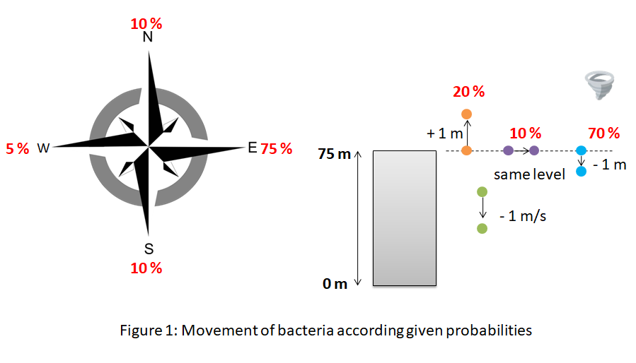
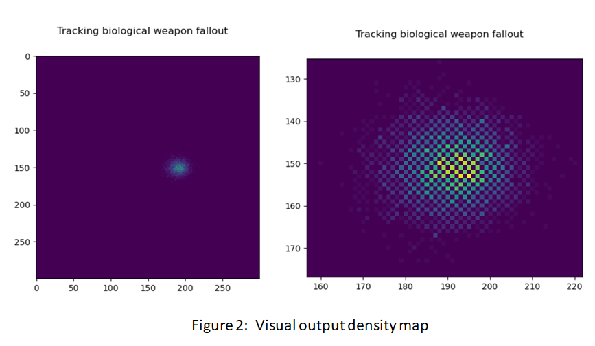

In our agent class, there are the constructor and two methods to simulate the movement of bacteria: bacteria can move in four possible directions : north, south, east and west because of the current wind and can rise or fall according the presence or not of turbulance. (See figure 1 below)
In this project, bacteria will be blown by the wind according this given probabilities :: (1) a bacterium will be blown west with 5% chance, (2) a bacterium will be blown east with 75% chance, (3)a bacterium will be blown north or south with 10% chance.
Concerning the presence or not of turbulance, when the bacteria are below 75 meters, there is no turbulance so the bacteria will drop by a meter a second. when the bacteria are at the height of the building (75 meters) and above, there is a turbulance and given probabilities are the following : (1) they will rise by a meter with 20% chance, (2) they will stay at the same level with 10% chance, (3) they will fall with 70% chance.

The Agent class, the constructor and functions to simulate the movement of bacteria according the current wind and turbulance were documented (see descriptions with parameters and return included in the code). Moreover, functions were tested (twenty-seven tests were performed).
In our script to run the model , there is in this order the code to (0) import librairies and modules requested for the program, (1) find the bombing point, (2) initialize the environment, (3) initialize two 2D lists zero and density in order to plot a density map later, (4) initialyse numbers of bacteia and iterations, (5) create a figure with a title, (6) create the bacteria (an empty list in which we added the attributes of Agent class), (7) simulate the movement of bacteria calling functions move and turbulance and (8) plot the density map.
The bombing point and the virtual environment are provided by the csv file windraster.csv. This file contains three hundred rows and three hundred columns with 0 and the value 255 which represents the bombing point in the city. In this project, any building does not appear in the virtual environment because they are considered not to influence the flow of this bacteria. A number of bacteria and a number of iterations are defined: five thousand bacteria and two hundred iterations.
In your console, first you can see the bombing point : y = 151 X = 51 value = 255 (y and x are respectively the y-coordinate and the x-coordinate). Printing the value allows us checking that we have the right coordinates of bombing point.
During the writing of this code, the program was tested with a smaller number of bacteria and a smaller number of iterations. For example for 5 bacteria and 85 iterations, we can see the name of bacteria (a number here between 0 and 4), these initial coordinates: x,y and z (As all bacteria are in the biological weapon, they have all the same initial coordinate y = 151, x = 51 and z= 75) and the coordinates after each iteration. In order to avoid that the console does not work with a high number of bacteria and iteraions, this part of code "print(bacteria[i])" after the creation of agents for initial coordinates and after calling the functions move and turbulance for the final coordinates of agents is left in comment (#).
Finally, you can see a density map with the title "Tracking biological weapon fallout" which will be save as a png file (See Figure 2 below).
